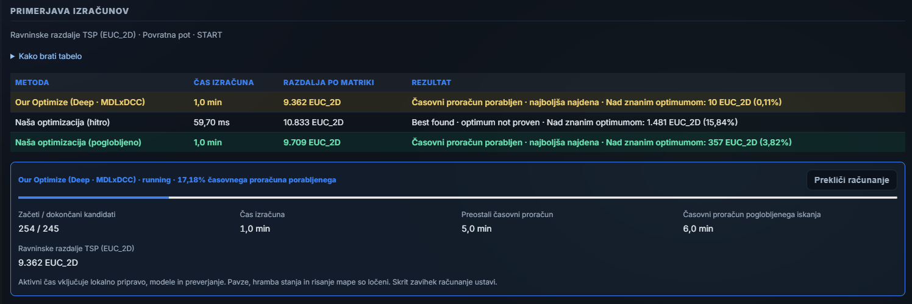
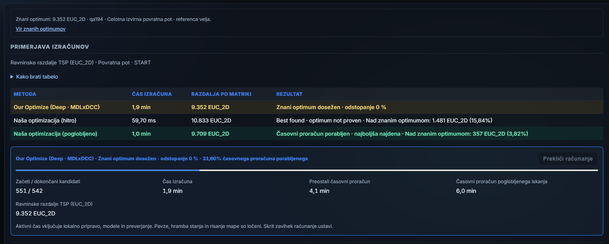

MDL×DCC · qa194 · 14. 9. 2026
A recorded browser run of experimental Deep · MDLxDCC: just 10 EUC_2D units above the known optimum after one minute, then the optimum after continuing the same search.Zabeležen brskalniški tek eksperimentalnega Deep · MDLxDCC: po eni minuti le 10 enot EUC_2D nad znanim optimumom, nato optimum z nadaljevanjem istega iskanja.
The one-minute comparison shows Fast at 10,833 (15.84% gap), ordinary Deep at 9,709 (3.82%) and Deep · MDLxDCC at 9,362 (0.11%). A +5-minute extension continued the experimental search; it stopped early at the known optimum of 9,352 after 1.9 minutes of total active computation. Ordinary Deep remains a one-minute result in these screenshots.Primerjava po eni minuti kaže Fast pri 10.833 (15,84 % odstopanja), običajni Deep pri 9.709 (3,82 %) in Deep · MDLxDCC pri 9.362 (0,11 %). Dodatek +5 minut je nadaljeval eksperimentalno iskanje; to se je predčasno ustavilo pri znanem optimumu 9.352 po skupno 1,9 minute aktivnega računanja. Običajni Deep na teh slikah ostaja rezultat enominutnega teka.


BD’s original screenshots · qa194 · complete original round trip · fixed START · planar EUC_2D distances, not kilometres. Times are rounded active compute times. BD paused another CPU workload using eight workers during this experiment. This is one observed run of the complete experimental solver, not a general speed guarantee or an isolated measurement of MDL’s contribution.BD-jevi izvirni sliki · qa194 · celotna izvirna povratna pot · fiksen START · ravninske razdalje EUC_2D, ne kilometri. Časi so zaokroženi aktivni časi računanja. BD je med preizkusom začasno ustavil drugo CPU opravilo z osmimi delavci. To je en opaženi tek celotnega eksperimentalnega solverja, ne splošno jamstvo hitrosti ali ločena meritev prispevka MDL.